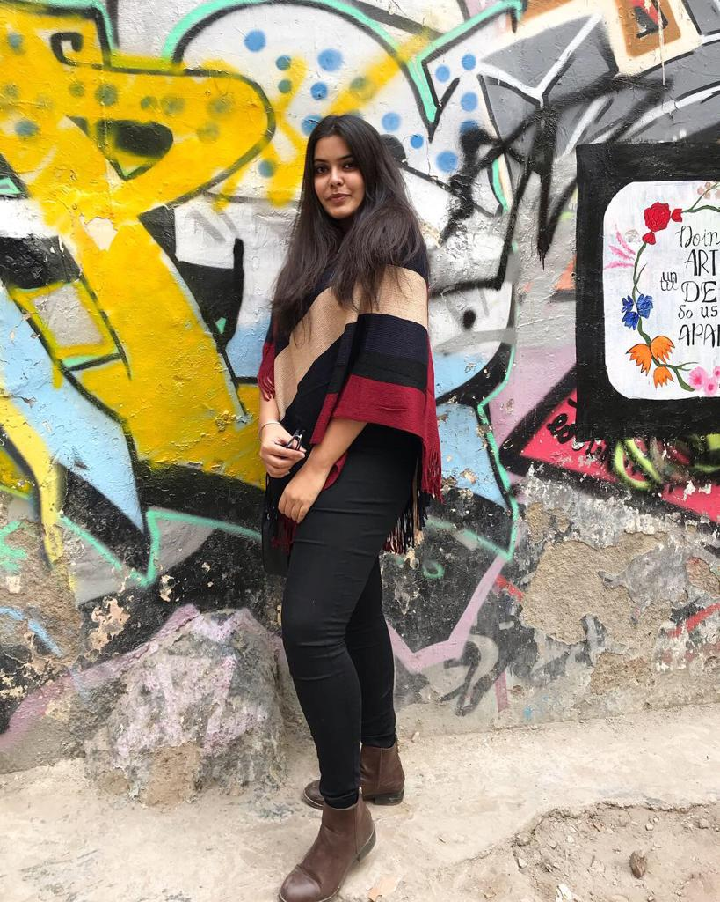

Born and raised in Delhi, India I did my schooling from Delhi Public School, NOIDA. Throughout my education I always excelled at the academics and participated in a number of extra curricular activities and was a part of the student council both years of high school.
I have represented my school in numerous competitions and olympiads. I received the Gold Medal for achieving excellence in academics for six consecutive years. I have always had a knack for logical reasoning, mathematical problems and coding which led to me choosing Computer Science as my major. I love solving algorithms and enjoy understanding the logic behind everything. I enjoy tons of other hobbies which include dancing, playing badminton and table tennis, solving puzzles like sudoku and crossword. I am also an avid reader.
On the achievements front, I have been awarded the top positions of Vedic Math National competitions for three years. In olympiads like National Math Olympiad, National Science Olympiad, and National Search for Talent Examination, I have reached successive rounds and have had ranks in the top 20. I cracked IIT JEE-Advanced 2018. I have completed 80+ hours of Community Service with various NGOs.